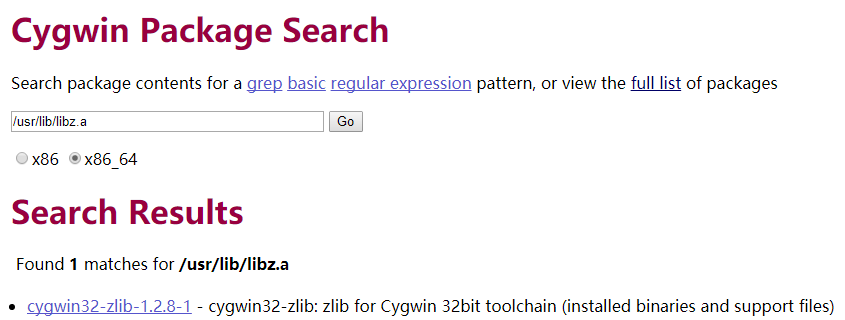
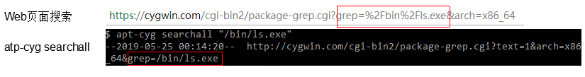

Cygwin系列（八）：命令行软件包管理器apt-cyg
本文共2500余字，预计阅读时间9分钟，本文同步发布于知乎（账号silaoA）和微信公众号平台（账号伪码人）。
关注学习了解更多的Cygwin、Linux技术。
前文 Cygwin系列（四）：一步一步搭建Cygwin最小系统和Cygwin系列（七）：Cygwin软件包管理相关配置着重介绍了setup作为包管理器的使用方法、相关配置文件，本文介绍Cygwin中另一个值得尝试的命令行包管理器——apt-cyg。
0x00 初识apt-cyg
setup是Cygwin中图形界面的包管理器，操作上基本是傻瓜式的点击“下一步”；与之对应，存在命令行包管理器。
GNU/Linux世界里常用有apt-get、yum、pacman等著名的命令行包管理器，成熟稳定、强大无比，Cygwin下则有apt-cyg这个友好易用的命令行包管理器，从名字一看便是模仿apt-get。Github上托管了39种shell语言版的apt-cyg，点击连接便可看到，本文要说的是搜索结果排第一的transcode-open/apt-cyg，遵循MIT开源协议发布，2016年发布v1版本后便再未更新过。它其实就是一个Shell脚本，帮助用户查找、安装、卸载软件包，还可以根据文件名称反向查找所属的软件包。
0x01 安装apt-cyg
transcode-open/apt-cyg页面上推荐的安装步骤为：1
2lynx -source rawgit.com/transcode-open/apt-cyg/master/apt-cyg > apt-cyg
install apt-cyg /bin
第1行是使用lynx命令将apt-cyg脚本从网站下载保存至当前目录的apt-cyg文件，第2行是使用install命令将apt-cyg文件安装至/bin目录下，这一步其实包含了两个动作：①将apt-cyg文件复制到/bin目录，②增加/bin/apt-cyg文件可执行权限，这样用户可以在任意位置使用apt-cyg命令。
也可以手工的方式用浏览器下载apt-cyg脚本至本地，通过cp命令复制到/bin目录，再通过chmod命令增加/bin/apt-cyg文件可执行权限。
apt-cyg运行过程中依赖bash、tar、wget、bzip2、gawk、xz软件包中的命令来完成文件下载、文本分析、压缩/解压等基本功能，需要先在Cygwin中安装好这些软件包。其中，bash、tar、wget、gawk属于Base类，在安装最小系统时已包含；bzip2、xz属于Archive类，需要通过setup先装上，确保后续运行apt-cyg不出错。
0x02 基本使用
老规矩，先试试apt-cyg --help看用法提示，可看出apt-cyg命令形式为apt-cyg [operation] [options] [targets]，其中operation代表所支持的15个操作，以下逐一说明。查看apt-cyg文件脚本源码，可以发现脚本实际是通过相应函数一一实现这15个操作，并且apt-cyg和setup共用了一套配置文件。
mirror
apt-cyg mirror [url]可以查看/设置镜像源地址。如果未给url参数，apt-cyg查找/etc/setup/setup.rc文件中last-mirror项并打印出来，以此作为镜像源地址；如果给定了url参数，则将/etc/setup/setup.rc文件中last-mirror项的值修改为url。
cache
英文cache的意思是缓存，不管是setup还是apt-cyg，安装软件包时，均需从镜像源站点下载文件，保存到本地的位置即称“缓存”，并且本地缓存的目录结构和镜像站点保持一致。
apt-cyg cache [path]可以查看/设置本地缓存顶层路径。如果未给path参数，apt-cyg查找/etc/setup/setup.rc文件中last-cache项并打印出来，以此作为本地缓存顶层路径；如果给定了path参数，则将/etc/setup/setup.rc文件中last-cache项的值修改为path。
在使用setup或apt-cyg时，允许每次设定不同的镜像源，本地缓存顶层路径之下，会给不同的镜像源建不同的目录，保存文件不会造成混乱。但一般不建议这么做，每个镜像源站点同步时间有先有后，保存的软件包清单和依赖就不一样，在安装时可能造成版本混乱。
install/remove
apt-cyg install [targets]和apt-cyg remove [targets]分别是安装、卸载软件包，targets参数指定软件包名称，可以同时多个。
apt-cyg会从/etc/setup/installed.db文件中查找本地系统中已经安装的软件包记录，如果已安装，再次install则跳过，也就是说apt-cyg不会自动更新软件包至最新版本；同理，如果未安装，却要remove则也跳过。
如果installed.db中没有记录，那么install操作便会触发下载、解压至根目录、执行安装后脚本等一系列动作，最后在installed.db中增加该软件包的记录。apt-cyg还支持依赖解析，安装软件包过程中，递归地安装每一个依赖。但remove操作不会把卸载软件包的依赖。
update
apt-cyg update是更新软件源的软件包清单，即根据/etc/setup/setup.rc中配置的last-mirror项和本地Cygwin的指令集架构版本（x86或者x86_64），调用wget去镜像站点下载最新的setup.ini文件至本地缓存。
在进行install操作时，会自动先update。
download
apt-cyg download [targets]仅将软件包下载到本地缓存但不安装，targets参数指定软件包名称，可以同时多个。在进行install操作时，下载动作实质就是download。
show
apt-cyg show targets展示软件包基本信息，targets参数指定软件包名称，可以同时多个。apt-cyg调用awk、sed在本地缓存的setup.ini文件中查找匹配的软件包的名称、版本、描述、依赖等信息。如Cygwin系列（七）：Cygwin软件包管理相关配置所举例的glew软件包。
depends/rdepends
apt-cyg depends targets查找软件包的依赖，apt-cyg rdepends targets查找依赖该软件包的更高层软件包，均以树形展示，targets参数可同时指定多个软件包名称。
依赖/反向依赖的解析，实质是调用awk、sed在本地缓存的setup.ini文件中根据软件包名称暴力搜索匹配。
list
apt-cyg list targets在/etc/setup/installed.db文件中查找与targets参数匹配的已安装软件包的名称，targets参数为正则表达式，可以同时多个。如果未指定targets参数，则列出所有已安装软件包。例如：1
2
3
4
5$ apt-cyg list xz bzip2
xz #匹配xz
bzip2 #匹配bzip2
libzip2 #匹配bzip2
listall
与list类似，但apt-cyg list targets是在本地缓存的setup.ini文件中查找与targets参数匹配的软件包的名称，targets参数为正则表达式，可以同时多个。那么，不论本地是否已安装，只要镜像站点中包含，listall均列出，即listall查找范围更广。例如：1
2
3
4
5
6
7$ apt-cyg listall bzip2
bzip2
bzip2-debuginfo
libzip2
mingw64-i686-bzip2
mingw64-x86_64-bzip2
pbzip2
listfiles
apt-cyg listfiles targets是查找指定软件包所含的文件清单，功能与cygcheck -l相同，targets参数指定软件包名称，可以同时多个。apt-cyg是通过查看/etc/setup/下package.lst.gz的文件实现这个功能的。
category
apt-cyg category targets列出某个类别下的所有软件包名称，targets参数为类别名称（如Base、Archive），类别名称见setup运行界面。例如：1
2
3
4
5
6
7
8
9
10
11
12
13
14
15
16
17
18
19
20
21
22
23
24
25
26
27
28
29
30
31
32
33
34
35
36
37
38$ apt-cyg category Base
alternatives
base-cygwin
base-files
bash
coreutils
crypto-policies
cygutils
cygwin
dash
diffutils
editrights
file
findutils
gawk
getent
grep
gzip
hostname
info
ipc-utils
libreadline7
libssl1.1
login
man-db
mintty
ncurses
openssl
rebase
run
sed
tar
terminfo
tzdata
util-linux
vim-minimal
which
_autorebase
search/searchall
apt-cyg search targets在本地缓存中查找匹配targets的软件包名称，过程相当于是listfiles反向暴力搜索匹配，apt-cyg searchall targets在https://cygwin.com/cgi-bin2/package-grep.cgi查找内容与targets匹配的软件包，targets参数为正则表达式，可以同时多个。searchall和cygcheck -f功能相同，但后者查找范围仅包括本地已安装软件包，前者范围更广。这对于查找某个头文件、库文件所属软件包比较有用，在构建程序过程中遇到报错“xx符号未定义的引用”，极有可能就是缺少某个开发库，但要安装开发库首先得查出它属于哪个包。

对比命令行和Web页面查询两种方式，在https://cygwin.com/cgi-bin2/package-grep.cgi查找结果更准确，命令行经常无匹配或者匹配过多，对比http请求提交参数，疑似对特殊符号处理不同，应是apt-cyg脚本本身不够完善。

选项说明
--nodeps选项，用于忽略依赖解析，不建议使用。--version选项打印版本信息。--help选项或不带任何参数和选项，用于打印使用方法。
0x03 使用感受及建议
使用apt-cyg过程，体验确实比setup轻量、快捷不少，命令行简洁高效，图形界面操作简易，二者各有所长，常用操作一般是install、remove、show、listfiles、searchall。
但在通过apt-cyg安装软件包时，偶尔遇到执行完命令发现仅在/etc/setup/installed.db增加记录实际却未安装的经历。安装执行完后建议cygcheck -c，检查软件包安装完整性，如不完整则用setup重新安装。另外，上文对比了apt-cyg searchall和网页查询的结果，后者更加准确，建议使用网页查询替代apt-cyg searchall。
如本文对你有帮助，或内容引起极度舒适，欢迎分享转发或点击下方捐赠按钮打赏 ^_^
- 本文链接：https://silaoa.github.io/2019/2019-05-25-Cygwin系列（八）：命令行软件包管理器apt-cyg.html
- 版权声明：本文为原创文章，如需转载，请联系stsilaoa@gmail.com 或 公众号 伪码人 或知乎私信 silaoA。